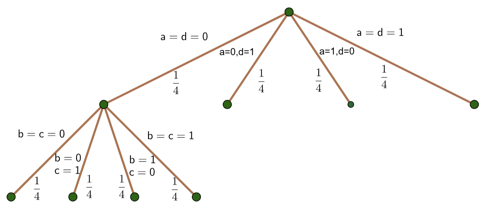

Two Simple Tools#
Two scenarios often arise in probability problem-solving. These two tools will make solving problems in those situations quite straightforward.
Monopoly Dice Rolls#
We are often asked to roll 2 dice and sum the values showing on them, the prototypical Monopoly dice roll used in many classic board games with stanard 6-sided dice. A grid of sums in quite useful here:
Above the line we have the value shown on one die, and to the left of the line we have the values shown on the other. The value inside the grid represent the sums of the two rolls.
Example 1#
What is the probability on a standard Monopoly Dice Roll that the players gets a 4 or less?
Solution#
Notice:
The diagonal pattern of all identical sums.
Less than probabilities include everything above the value diagonal.
Greater than probabilities include everything below the value diagonal.
Here, we have 3 values equal to 4 and 3 that are less than 4. Thus, we have 6 total outcomes that represent success. Let \(x\) represent the random variable indicating the sum of the dice roll, and we have the following: $\(P(x\leq 4) = \frac{6}{36}=\frac{1}{6}\)$
Example 2#
What is the probability on a standard Monopoly Dice Roll that the players gets 8 or more?
Solution#
As can be seen above, we have 5 values of 8 and \(4+3+2+1 = 10\) values greater than 8. Given \(x\) is the simple random variable representing the sum of the dice roll, we have:$\(P(x\geq 8) = \frac{15}{36}= \frac{5}{12}\)$
Probability Trees#
A probability tree is a quite useful graph theory tool that we can use to determine probabilities from a sequence of probability experiements. Let’s look at an example and describe the necessary properties of a probability tree.
Urn 1 has the following marbles in it from which draws are made without replacement:
2 Red Marbles
3 Blue Marbles
{kind=link}
Properties of Probability Trees:#
A probability tree is a directed graph, meaning we travel from a starting point in only one direction. Once we have traveled an edge, we cannot reverse the journey.
The set of edges extending from each node include all possible outcomes from that point.
If the edges are weighted with the probabilities of the respective outcomes occuring, the sum of all probabilities of all outcomes from each node must equal 1.
If all 3 above properties are true, then the product of the probabilities (or edge weightings) along any path determine the probability of the event described by that path occurring.
From the top node (starting point), we have two outcomes. Either a Red or Blue is drawn. Note that following either edge leads to different probabilities for the second draw. Since we draw without replacement, a marble has been removed prior to the second draw leaving 4 marables, not 5, for the second draw. The second level nodes have update probabilities indicated by the edge weightings of the edge that emanate from them.
Probability of 2 Reds Drawn:#
To calculate the probability of 2 Reds being drawn, we multiply the probabilities along the left-most path of the tree:
Tip
Notice that, in a probability tree, unreduced fractions can be quite helpful. This is atypical for mathematics problem-solving where we almost always benefit from reducing fractions. We use unreduced fractions so that the properties of the probability tree can be quickly verified. The unreduced fractions show the actual counts used to create the probabilities so we can easily see the actual number of items from which draws are made.
Probability of 1 Red and 1 Blue Drawn:#
Notice that we can draw 1 Red and 1 Blue in two different ways represented by the two interior paths of the probability tree. Thus:
2 x 2 Matrices and Probability Trees#
The question in the 50 Counting Questions asks about a \(2\times 2\) matrix where all entries are chosen at random from the set \(\{0,1\}\). What is the probability of having a row or column of all zeros?
First, let’s create a \(2\times 2\) matrix with entries \(a,b,c,d\) as follows:
First, notice that we can only have a row of zeros provided:
\(a=0\)
\(d=0\)
or both
The same is true for a column of zeros.
Second, notice that once either \(a=0\) or \(d=0\) (or both), we have a row of zeros provided:
\(b=0\)
\(c=0\)
or both
Similary for a column of zeros. Thus, the probability tree below describes the situation. Given time and space constraints, only one second-level set of branches is drawn. Note the other 3 would be identical to the one shown.
{kind=link}
To solve the problem, notice that a row or column of all zeros is only possible down one of the first three edges from the starting node. At the second level, notice all 3 of the first three edges have either a row or column of zeros. Thus, the probability of not having a row or column of zeros is as follows:
where $\(\begin{align}P(\text{No Row or Column of Zeros}) &= 3\left(\frac{1}{4}\cdot\frac{1}{4}\right) + \frac{1}{4}\\&= 3\left(\frac{1}{16}\right) + \frac{1}{4}\\&= \frac{3}{16} + \frac{4}{16}\\&= \frac{7}{16}\end{align}\)$
Hence, we have the following: